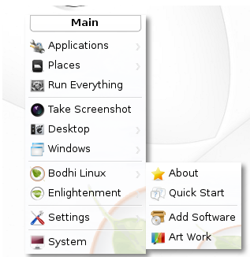
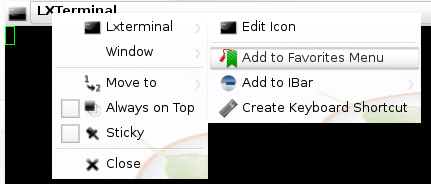
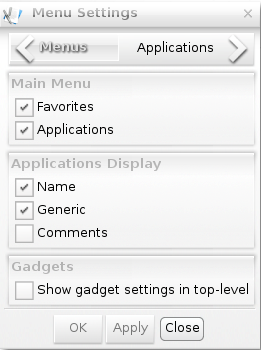

Complete Guide to Bodhi Linux: "Main Menu"
Computer users have become accustomed to having a "main menu" ("Menu") since the release of Windows 95. Since then, Windows has stayed consistent, putting a "Start Menu" on the bottom left hand corner of the screen - accessible via mouse click or keyboard shortcut. Apple introduced a similar feature with the "Apple Menu" which is located on the top left corner of the screen. Bodhi Linux keeps with the tradition and by default has a "Main Menu" button located on the bottom left corner of the screen.
- Introduction
- Where Did it Go?
- Menu Structure
- Favorite Applications
- Customizing Bodhi Linux's Menu
- Enlightenment's Menu Settings
- Further Information
Introduction
Moksha provides the Menu through the use of a Start Gadget which is typically placed on a Shelf but can also be placed directly on the desktop. Bodhi's default theme comes with the Gadget placed on the bottom left corner and looks like three dots.
Most, but not all, of the Profiles installed with Bodhi LinuxMenu and in most of the Themes the placement of the Menu is on the bottom left corner on a shelf. Additionally, in most Themes the Menu looks like the Bodhi Linux leaf logo.
Because Bodhi Linux is built on the principles of choice, the Gadget can be placed on the desktop itself (i.e., not stuck on a Shelf at all) or, a user can opt to not have a start Gadget at all.
However, it is possible to remove the Start button. This may seem an odd thing to do to people unfamiliar with E17. But fear not, this does not remove the menu, merely its button. E17's menus can be displayed by clicking on any unoccupied spot on the desktop. Note that E17 has two menus. The Menu found by clicking a Start button or left clicking any blank spot on Bodhi Linux's desktop is known as the Main Menu. Whereas, the menu displayed by right clicking on an unoccupied spot on the desktop is the Favorites Menu. On a default installation of Bodhi Linux, the Favorites Menu is empty but as we shall see it is easy to add your own favorite applications to this menu.
 In addition to accessing E17's Main Menu from either the Start button or from the left-click on the desktop, in Bodhi Linux there is a default key-binding to open the Main Menu from the keyboard. It's the Menu key! On most keyboards this key is to the right of the spacebar near the Alt and Ctrl keys and looks like the image to the right. Naturally this keyboard shortcut can be changed by the user or deleted altogether.
In addition to accessing E17's Main Menu from either the Start button or from the left-click on the desktop, in Bodhi Linux there is a default key-binding to open the Main Menu from the keyboard. It's the Menu key! On most keyboards this key is to the right of the spacebar near the Alt and Ctrl keys and looks like the image to the right. Naturally this keyboard shortcut can be changed by the user or deleted altogether.
Where Did it Go?
A minor digression on using E17's Menu that may confuse some new users of Bodhi Linux. As you scroll down the Main Menu list, the sub-menu entries always open to the right of the menu. Ordinarily this is not a problem, but what if you open the Main Menu close to right edge of the screen? In that case the sub-menu may open and be partially or totally offscreen. It appears to be a quirk with E17's menu implementation, but that thought is a bit hasty. In this case you merely have to move the mouse cursor to the right and the whole menu structure moves to left revealing the hidden sub-menu items. As programmers are fond of saying, ”It is not a bug, it is a feature.” Another example of the elegance and beauty of Enlightenment.
Menu Structure
This section is a brief description of the structure of Bodhi Linux's Main Menu, although truthfully the best way to gain familiarity with the menu is to open it up and explore it. But nonetheless, the Main Menu in a default installation of Bodhi Linux lists, from top to bottom:

Applications
Contains most of the GUI applications installed on your system, arranged in sub menus based upon categories. Command line Applications will not be displayed in the Applications Menu. They can, however, be added.Places
In a default installation of Bodhi Linux, Places allows you to open the Home folder, the Trash folder, and the (root) File system as well as mounted file systems and the default file manager's Bookmarks. Places is actually a Module and can be unloaded in which case it will disappear from the menu. You can also change the default settings of the Places Module. To do so from the Main Menu go to Settings → All → Files → Places. This will open a Places Settings dialog window where you can adjust Places to display or not to display the following: Home, Desktop, Trash, File system, Temp, and Favorites. You also have an option to not to display Places altogether in the Main Menu.Run everything
Launches the Run Everything Application.Desktop
Allows an easy switch to any virtual desktop as well as fast access to Virtual Desktops Settings and Shelves Settings. You also have the option to show or hide all open windows on the current Desktop.Windows
Allows fast access to any open window, an option to clean up windows, and an option to find lost windows.Bodhi Linux
Here you will find Bodhi Linux's extension to the E17's Main Menu. There are four sections:About
Opens the About Bodhi Linux window.Quick Start
Opens a locally stored Quick Start web page in the default web browser.Add Software
Opens the Bodhi Linux AppCenter web page in the default web browser. Here you can easily and conveniently install useful applications and more.Artwork
Opens the Bodhi Art web page where you can get some extra eye candy for your desktop. Most of the artwork contributors on this page are users of Bodhi Linux rather than professional graphic artists.Enlightenment
About
Opens the About Enlightenment window.Theme
Opens an About Theme window which displays information about the current E17 theme.Restart
Choosing this restarts E17, sometimes necessary if settings do not seem to take effect or in the rather unlikely event that E17 seems to not be working correctly.Quit
Shuts Down E17.Settings
Opens E17's Settings Panel. A tweakers paradise!System
Here are the familiar Shutdown, Reboot, Suspend, Lock, et. al. functions.
It should be further noted that loading certain Modules or changing some of E17's Settings may add or remove some menu items. Furthermore, adding applications to the Favorites Menu will add Favorite Applications to the top of the Main Menu list, which brings us to our next topic.
Favorite Applications
The Favorites Menu contains a list of applications to which the user wishes quick access. This list of favorite applications can be found in either Bodhi Linux's Main Menu or by right clicking any unoccupied spot on the desktop. On a default installation of Bodhi Linux, the Favorites Menu will not show up in Bodhi Linux's Main Menu nor will the right-click to access the Favorites Menu work. This is because no applications have been added to the favorites list by default. It is the philosophy of Bodhi Linux not to try to second guess what the user wants and to keep things minimal and let the users decide what they want themselves.
Adding Lxterminal to Favorites
There are two methods of adding an application to the Favorites Menu. For the first method, launch the application you wish to add, say Lxterminal. Left click the application's icon in the upper left hand corner choose the app's name and then click Add to Favorites Menu as pictured to the right. Lxterminal will now appear in your Favorites Menu. Incredibly simple and truly elegant!
The second method is not much more difficult. From Bodhi Linux's Main Menu, Choose Settings → All → Apps → Favorite Applications. This launches E17's Favorite Applications window, under Applications scroll down the list until you find the application you wish to add, click it to highlight it and then click the Add button. A green dot will appear beside the applications name as pictured to the left for PCManFM. (Note: the indicator may be something other than a green dot in some Profiles) Click Apply and then Ok. The application will now be added to your Favorites list and appear in the menu.
To remove an application from the Favorites Menu, launch the Favorite Applications window as was done above. Scroll through the application list, noting that applications in the Favorites Menu will have a green dot (or other indicator) by their name. Find the application you wish to remove, click it to highlight it and then click the Remove button. The green dot (or other indicator) beside the application's name will disappear. Now click Apply and then Ok. The applications will now be removed from your Favorites Menu.
If you are an avid user of the Favorites Menu and frequently use a lot of applications, you may find your Favorites Menu becomes rather long and you may desire a different order, perhaps placing the apps you access most often at the top of the list. Naturally E17 provides a means to change the order of the applications in the list. Again launch E17's Favorite Applications, only this time click on the Order tab, as pictured to the right. Find the application you wish to move, click it to highlight it. Now click either the Up or Down buttons to position it where you wish it to be in the menu. If desired you can do the same for one or more other applications. Once the order desired is created, click Apply and then Ok.
Customizing Bodhi Linux's Menu
E17 has a rather unique approach to task of editing, adding or removing menu items. Instead of offering a separate application allowing the user to change menu items, the ability to graphically edit a menu item is incorporated into E17 itself. To see how let's examine how to add an application to the Main Menu.
Adding an Application
Sometimes you install an application and it does not appear in the menu, this is probably the result of how the application was packaged. But for the purposes of this guide the examples we will deal with two applications which are already installed in Bodhi Linux. These applications are Archive Manager (aka “file-roller”) and xterm. On a default installation of Bodhi Linux, neither of these applications appear in the Main Menu. The two procedures outlined below for adding these two applications should apply to any application you install but for whatever reason does not install a Main Menu application entry.
First let's consider Archive Manager. The key here is to launch the application. There are three or more different ways you could do this. One is to use E17's Run Everything, another is to launch the app from a terminal and the third is to find the file and launch it by clicking on it.
To illustrate using the Run Everything application, first let us launch Run Everything. It can be found in the Main Menu or launched by a key board shortcut, Alt-Esc, Ctrl-Alt-Space or Windows-Space. Once it launches start typing Archive Manager and as soon as it is displayed double click the icon to launch it.
Once the Archive Manager launches, right-click Archive Manager's Title bar or its icon in the window's upper left-hand corner and choose File-roller → Edit Icon. A Desktop Entry Editor window will pop up as pictured below, click on Options and then check Show In Menus and then click Apply and Close. Now the Archive Manager will be in the menu under Accessories.
Now for the second method let's add a menu entry for xterm. This method is merely an alternative way to launch the Desktop Entry Editor window. In the Main Menu choose Settings → All → Apps → Create Launcher. In the Desktop Entry Editor window which pops up fill in the following entries:
The Basic Tab
Name: XTerm
Comment: Use the command line
Application: xtermThe Icon Tab
Icon: terminalThe General Tab
Generic name: Terminal Categories: GTK;Utility;TerminalEmulator;The Options Tab
Check Show in Menus
When completed, click Apply and Close. Now xterm will be in the menu under Accessories.
Removing an Application
Now that you have seen how to use the Desktop Entry Editor it should be obvious how you remove an entry from the menu. Launch the application you wish to remove and then left click its icon in the windows upper left hand corner and choose Application name → Edit Icon. A Desktop Entry Editor window will pop up, click on Options and then uncheck Show In Menus and then click Apply and Close. Where naturally, application name is the name of the application you wish to remove and the very first menu entry in the ”left click on the icon” context menu.
Enlightenment's Menu Settings
There is yet one more tool for altering Bodhi Linux's Menu hidden in E17's Settings to consider. This is the Menu Settings dialog , pictured to the left. To open this window, open the Main Menu and then choose Settings → All → Menus → Menu Settings.
The Menu Settings window has four tabs: Menus, Applications, Autoscroll, Miscellaneous, and will open with the Menus tab opened by default. This tab is divided into three subsections:
Main Menu
Checking or un-checking an entry here will either display or not display the selected sub-section in the Main Menu.Applications Display
Checking or un-checking an entry here changes the way an application is displayed in E17's menus. You can choose to display an application's name, its generic name and/or the app's comment. These entries are the same that appear in the Desktop Entry Editor and of course can be edited there if need be.Gadgets
This feature is deprecated and makes no difference whether checked or unchecked.
Note: To ensure that the changes are made after making any changes in the Menu tab or any other tab of the Menu Settings window, be sure to click Apply or the change will not be made.
Clicking the Applications tab in the Menu Setting window, allows you to choose what menu source the system uses to display the Applications sub-menu. In a default installation of Bodhi Linux the choices are Enlightenment and Lxde (Applications). There is no difference in the Application sub-menu no matter which option you choose.
The remaining two tabs, Autoscroll and Miscellaneous allows you to tweak various aspects of how E17's menus behave. The best way to see what these various settings do is to play with them.
Further Information
Some sub-menu items are sufficiently complex to warrant a separate article describing their use:
- Enlightenment Settings: An in-depth look at all of E17's Settings.
- The Everything Module: An examination of the basic usage of the Run Everything Module.
- LXAppearance: This application controls the look of GTK applications.
- Editing or creating .desktop files to launch applications including terminal applications.
- Organizing sub-menus under E17's Main Menu application sub-menu.
- Maybe more…
| Prev: | Contents: | Next: |
| Introduction | Index | Virtual Desktops |